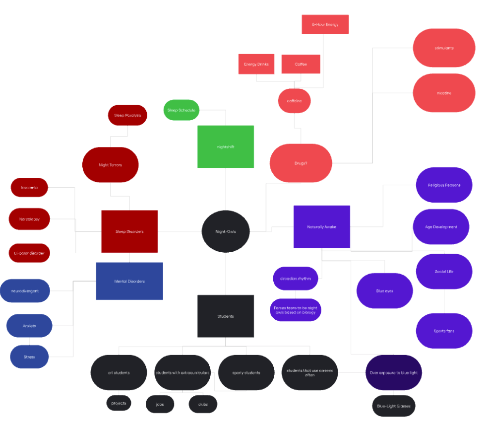
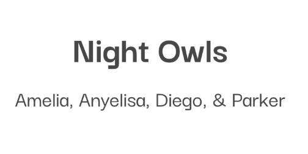

This project was lenghthier than La Llorona's, considering that it was a group project (shout out to Amelia, Diego, and Parker) and everyone had different ideas. Regardless, I enjoyed it more than I thought I would!
For this project, similar to La Llorona's hair care, it was also created for a class. I included background information, as well as links to our slideshows (brainstorming, sources, and the original slideshow itself with all of our work included).
We did extensive research on something that all of us struggle with at some point of our lives, and that is sleep. However, instead of fixing our lack of sleep with the traditional route of finding something that would allow us to sleep more, we thought about those who truly cannot afford to sleep, whether it be because of work or things they must do at night that they cannot do during the day, and how we can restore or keep energy without the use of caffeinated beverages or energy drinks.
Feel free to take your time reading through everything!
Slideshow about the night owls!